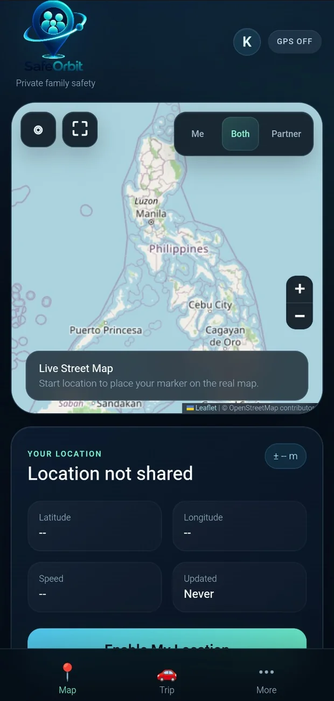

SafeOrbit
A private family-safety experiment covering consent-based location sharing, map interfaces and travel-related workflows.

Why this exists.
Location technology is useful only when trust and user control remain central. SafeOrbit investigates sharing, check-ins and maps while keeping those controls visible.
Key modules
- User-controlled location sharing UI
- Map and globe interface experiments
- Trip / arrival safety concepts
Built with direction and review.
My role: Requirements, AI-assisted prototyping, UX review and ongoing experimentation.
Where AI helped: Design iterations and assisted development of UI experiments for maps and privacy-conscious workflows.
This public presentation intentionally excludes GPS coordinates, precise shared locations and tracking screenshots. The screen shown is a GPS-off state.
Current limitation: Prototype functionality is not a verified emergency response service. Do not rely on this portfolio demo for personal safety.
Inside the project.
Screenshots come from the uploaded development/demo materials. Click any image to expand.
Work that can be inspected.
Explore the demonstration where available, or return to the full portfolio to see more work.